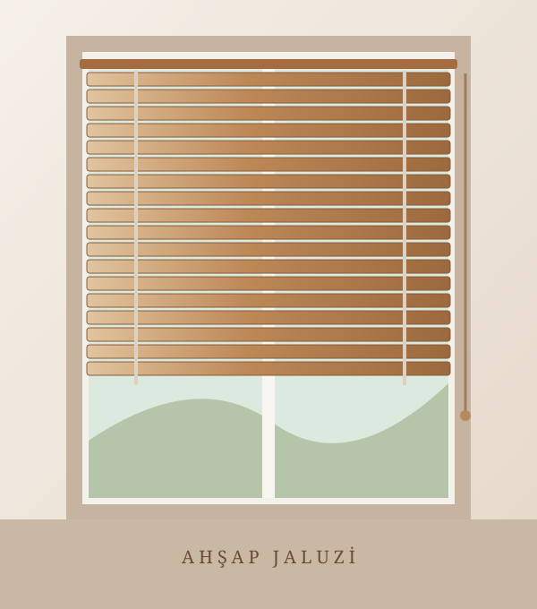

Ölçü Alma Rehberi
Eni soldan sağa, boyu montajın yapılacağı üst noktadan alt noktaya kadar ölçün. Ölçüleri yalnızca yarım santimetrelik adımlarla girin: 30 / 30,5 / 31 cm.
KOLEKSİYONUMUZ
Doğal ahşap dokusu, şık görünümü ve ayarlanabilir ışık kontrolüyle yaşam alanlarınıza sıcaklık katın.

AHŞAP JALUZİ PERDE
Doğal ahşap dokusu ve ayarlanabilir ışık kontrolü.
ⓘ Ölçülerinizi girdikçe toplam fiyat otomatik hesaplanır.
Doğal ahşap ve zarif tasarım bir arada. Siparişinize özel ölçülerle üretilir.
Eni soldan sağa, boyu montajın yapılacağı üst noktadan alt noktaya kadar ölçün. Ölçüleri yalnızca yarım santimetrelik adımlarla girin: 30 / 30,5 / 31 cm.
Jaluziyi pencere, duvar veya tavana monte edebilirsiniz. Montaj yüzeyine uygun bağlantı elemanını tercih edin. Emin değilseniz destek alın.
Ahşap lamellerin tozunu kuru, yumuşak bezle silin. Fazla su ve aşındırıcı temizlik maddesi kullanmayın. Üreticinin bakım talimatlarına uyun.